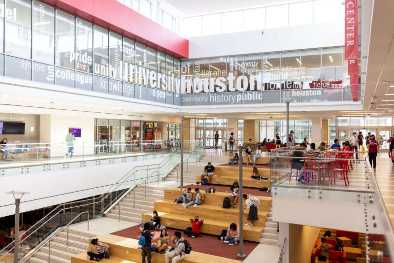
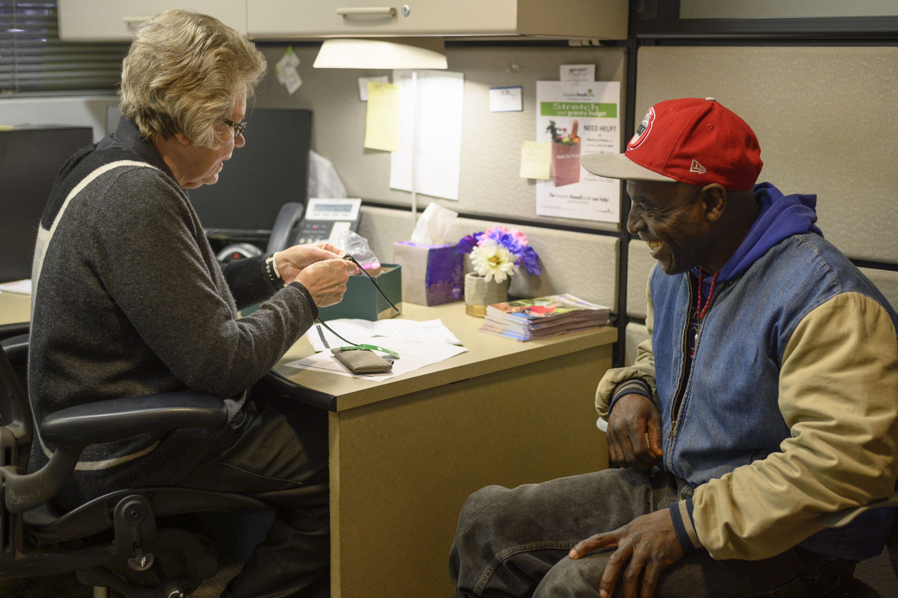
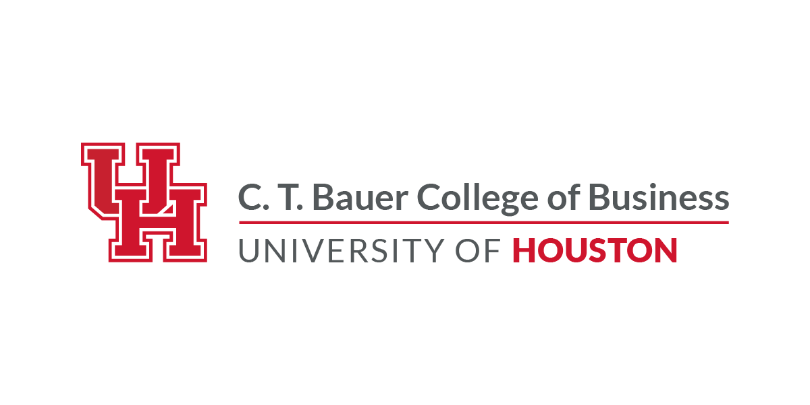

Master of Science in Management Information Systems
Advanced study in information systems, analytics, data management, and technology-driven business solutions.
ABOUT ME
I am an MIS graduate who enjoys turning complex information into clear, useful insight—and helping others do the same.

EDUCATION
UNIVERSITY
C. T. Bauer College of Business
Advanced study in information systems, analytics, data management, and technology-driven business solutions.
A dual foundation in customer insight, business strategy, technology, and analytical problem-solving.

At Bauer, I learned to approach business questions from both technical and human perspectives. Coursework, research, teaching, and student organizations gave me opportunities to analyze information, communicate findings, support others, and turn ideas into practical work.
PROFESSIONAL & ACADEMIC EXPERIENCE
INSPERITY · BUSI 3302
I helped conduct data-driven research involving more than 150 students to better understand motivations and recruitment preferences. Working with a team of eight, I analyzed survey responses and helped translate the findings into useful project insights.
This work strengthened my ability to connect quantitative findings with real human needs and communicate recommendations clearly.

MIS · BUSINESS ANALYTICS
I supported face-to-face and online courses by grading assignments, exams, dashboards, analytics projects, and presentations. Through office hours, discussion boards, and one-on-one support, I helped students work through Tableau, visualization, analytics concepts, and project troubleshooting.
Teaching made me a clearer communicator and taught me how to give constructive feedback while helping others build confidence with data and technology.
OPERATION ID · COMMUNITY SERVICE
I enter information for approximately 30–40 clients each day, maintain accurate and organized database records, and conduct interviews to understand each client’s documentation needs.
By researching government identification requirements and helping clients obtain the right supporting documents, I have strengthened my attention to detail, client communication, and ability to handle confidential information with care.

LEADERSHIP & COMMUNITY

ABSA
Professional events, workshops, networking, and community service expanded my industry awareness and career readiness. I received the Most Active Member Scholarship and Community Service Scholarship.

MISSO
I connected with peers and professionals while exploring technology, business systems, analytics, and MIS career paths outside the classroom.

BAUER UNDERGRADUATE CENTER
I guided mentees with career advice, personal development, and campus involvement while helping create a supportive environment for students.
SKILLS & PERSPECTIVE
TECHNICAL TOOLKIT
CORE STRENGTHS
Data analysis, visualization, research, technical problem-solving, teaching, cross-cultural communication, and collaborative work.
WHAT I’M BUILDING TOWARD
I want to continue growing in roles where MIS, analytics, communication, and problem-solving can make information easier to understand and decisions easier to make.